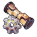
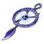
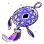

| Nome | Sampo Koski |
|---|---|
| Elemento | Vento | Raridade | ✦ ✦ ✦ ✦ |
| Caminho | A Nihilidade |
| Sexo | Homem |
| Especie | Humano |
| Facção | Belobog e Fogo-Vivo | Mundo | Jarilo-VI | Como obter | Warps Loja | Data de Lançamento | 2023-04-26 | Adicionado pela primeira vez | Versão 0.6.0 |
Ascensões e estatísticas
| Fase de Ascensão | Level | Base HP | Base ATK | Base DEF | Base SPD |
|---|---|---|---|---|---|
| 0✦ | 1/20 | 139 | 84 | 54 | 102 |
| 20/20 | 271 | 163 | 105 | 102 | |
| 1✦ | 20/30 | 327 | 197 | 126 | 102 |
| 30/30 | 396 | 239 | 153 | 102 | |
| 2✦ | 30/40 | 452 | 273 | 175 | 102 |
| 40/40 | 522 | 315 | 202 | 102 | |
| 3✦ | 40/50 | 577 | 348 | 224 | 102 |
| 50/50 | 647 | 390 | 251 | 102 | |
| 4✦ | 50/60 | 702 | 424 | 272 | 102 |
| 60/60 | 772 | 466 | 299 | 102 | |
| 5✦ | 60/70 | 828 | 499 | 321 | 102 |
| 70/70 | 897 | 541 | 348 | 102 | |
| 6✦ | 70/80 | 953 | 575 | 369 | 102 |
| 80/80 | 1,023 | 617 | 396 | 102 |
| Nível | Custo de Evolução | Materiais de Ascensão do Personagem | Materiais Necessários |
|---|---|---|---|
| 0 → 1 ✦ | 3,200 | 4 | |
| 1 → 2 ✦ | 6,400 | 8 | |
| 2 → 3 ✦ | 12,800 | 2 | 5 |
| 3 → 4 ✦ | 32,000 | 5 | 8 |
| 4 → 5 ✦ | 64,400 | 15 | 5 |
| 5 → 6 ✦ | 128,000 | 28 | 7 |
Habilidades de combate
| Icone | Tipo | Nome | Descrição | Marcação | Energia | Resistência DMG |
|---|---|---|---|---|---|---|
| ATK básico | Lâminas Deslumbrantes | Causa Wind DMG igual a 50%–130% do ATK de Sampo a um único inimigo. | Alvo único | Geração: 20 | 30 | |
| Skill | Amor Ricochete | Causa DMG de vento igual a 28%–70% do ATK de Sampo a um único inimigo e ainda causa DMG por 4 tempo(s) extra(s), com cada vez causando DMG de vento igual a 28%–70% do ATK de Sampo a um inimigo aleatório . | Quicar | Geração: 6 × 5 | 30 (Primeiro Acerto) 15 (Acertos Subseqüentes) | |
| Ultimate | Presente Surpresa | Causa DMG do Vento igual a 96%–192% do ATK de Sampo a todos os inimigos, com 100% de chance base de aumentar o DoT dos alvos em 20%–35% por 2 turno(s). | Prejudicar | Custo: 120 Geração: 5 | 60 | |
| Talento | Punhal Rasgado Pelo Vento | Os ataques de Sampo têm 65% de chance base de infligir Wind Shear por 3 turno(s). Inimigos infligidos com Wind Shear terão Wind DoT igual a 20%–65% do ATK de Sampo no início de cada turno. Wind Shear pode acumular até 5 vezes. | Melhorar | |||
| Técnica | Brilhando | Depois que Sampo usa a Técnica, os inimigos em uma área definida são infligidos com Cegueira por 10 segundo(s). Inimigos cegos não podem detectar sua equipe. Ao iniciar o combate contra um inimigo cego, há uma chance fixa de 100% de atrasar a ação de todos os inimigos em 25%. | Prejudicar |
Eidolons
| Icone | Nome da habilidade | Nivel | Descrição |
|---|---|---|---|
| Amor Crescente | 1 | Ao usar Skill, causa DANO por 1 tempo(s) extra(s) a um inimigo aleatório. | |
| Entusiasmo Contagiante | 2 | Derrotar um inimigo com Wind Shear tem 100% de chance base de infligir todos os inimigos com 1 stack(s) de Wind Shear, equivalente ao Talent's Wind Shear. | |
 |
Muito Dinheiro! | 3 | Habilidade Nv. +2, até um máximo de Lv. 15. ATK Básico Lv. +1, até um máximo de Lv. 10. |
 |
Quanto mais profundo o amor, mais forte o ódio | 4 | Quando Skill atinge um inimigo com 5 ou mais stack(s) de Wind Shear, o inimigo recebe imediatamente 8% do atual Wind Shear DMG. |
| Enorme Dinheiro! | 5 | Nível final +2, até um máximo de Lv. 15. Talento Nv. +2, até um máximo de Lv. 15. | |
| Gastos Aumentados | 6 | O multiplicador de DMG Wind Shear do talento aumenta em 15%. |
Traços
| Custo Total (1 → 6 para rastreamento de ATK básico) | ||||||
|---|---|---|---|---|---|---|
| 192.000 | 4 | 5 | 5 | 2 | 6 | 8 |
| Custo total (1 → 10 para um rastreamento) | ||||||||
|---|---|---|---|---|---|---|---|---|
| 522.000 | 6 | 10 | 5 | 2 | 12 | 23 | .webp) 3 3 |
1 |